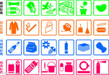

产生原因
一图了解生活中的垃圾分类
垃圾分类 一图
每个人每天都会扔出许多垃圾，在一些垃圾管理较好的地区，大部分垃圾会得到卫生填埋、
焚烧、堆肥等无害化处理，而更多地方的垃圾则常常被简易堆放或填埋，
导致臭气蔓延，并且污染土壤和地下水体。
垃圾无害化处理的费用是非常高的，根据处理方式的不同，处理一吨垃圾的费用约为一百
元至几百元不等。人们大量地消耗资源，大规模生产，大量地消费，又大量地生产着垃圾。后果将不堪设想。
从国外各城市对生活垃圾分类的方法来看，大致都是根据垃圾的成分构成、产生量，结合
本地垃圾的资源利用和处理方式来进行分类。如德国一般分为纸、玻璃、金属和塑料等；澳大利亚一般分为可堆肥垃圾，可回收垃圾，不可回
收垃圾；日本一般分为塑料瓶类，可回收塑料，其他塑料，资源垃圾，大型垃圾，可燃垃圾，不可燃垃圾，有害垃圾等等。
回到顶部
分类原则
分而用之
分类的目的就是为了将废弃物分流处理，利用现有生产制造能力，回收利用回收品，包括物质利用和能量利用，
填埋处置暂时无法利用的无用垃圾。
各地、各区、各社（区）、各小区地理、经济发展水平、企业回收利用废弃物的能力、居民来源、生活习惯、经济与心理承担
能力等各不相同。
自觉自治

社区和居民，包括企事业单位，逐步养成“减量、循环、自觉、自治”的行为规范，创新垃圾分类处理模式，成为垃圾减量、分类、回收和利用的
主力军。
减排补贴 超排惩罚
制定单位和居民垃圾排放量标准，低于这一排放量标准的给予补贴；超过这一排放量标准的则予以惩罚。减排越多补贴越多，超
排越多惩罚越重，以此提高单位和居民实行源头减量和排放控制的积极性。
捆绑服务 注重绩效
在居民还没有自愿和自觉行动而居（村）委和政府的资源又不足时，推动分类排放需要物业管理公司和其他企业介入。但是，仅仅
承接分类排放难以获利，企业不可能介入，而推行捆绑服务就能要解决这个问题。将推动分类排放服务与垃圾收运、干湿垃圾处理业务捆绑，可促
进垃圾分类资本化，保障企业合理盈利。
垃圾分类回收说难不难，分而用之实为关键，因地制宜提供方便，自觉自治行为规范。
回到顶部
分类意义
当前形势
垃圾分类是对垃圾收集处置传统方式的改革，是对垃圾进行有效处置的一种科学管理方法。人们面对日益增长的垃圾产量和环境状况恶
化的局面，如何通过垃圾分类管理，最大限度地实现垃圾资源利用，减少垃圾处置量，改善生存环境质量，是当前世界各国共同关注的迫切问题之一。
垃圾增多的原因是人们生活水平的提高、各项消费增加了。据统计，1979年全国城市垃圾的清运量是2500多万吨，1996年城市垃圾的清
运费是1.16元/吨，是1979年的4倍。经过高温焚化后的垃圾虽然不会占用大量的土地，但它投资惊人，难道我们对待垃圾就束手无策了吗？办法是有
的，这就是垃圾分类。垃圾分类就是在源头将垃圾分类投放，并通过分类的清运和回收使之重新变成资源。
垃圾分类处理的优点如下：
减少占地
生活垃圾中有些物质不易降解，使土地受到严重侵蚀。垃圾分类，去掉可以回收的、不易降解的物质，减少垃圾数量达60%以上。
减少污染
目前我国的垃圾处理多采用卫生填埋甚至简易填埋的方式，占用上万亩土地；并且虫蝇乱飞，污水四溢，臭气熏天，严重污染环境。
土壤中的废塑料会导致农作物减产；抛弃的废塑料被动物误食，导致动物死亡的事故时有发生。因此回收利用还可以减少危害。
变废为宝
中国每年使用塑料快餐盒达40亿个，方便面碗5~7亿个，一次性筷子数十亿双，这些占生活垃圾的8~15%。1吨废塑料可回炼600公斤的柴油。
回收1500吨废纸，可免于砍伐用于生产1200吨纸的林木。一吨易拉罐熔化后能结成一吨很好的铝块，可少采20吨铝矿。生活垃圾中有30%~40%可以回收
利用，应珍惜这个小本大利的资源。 大家也可以利用易拉罐制作笔盒，既环保，又节约资源。
而且，垃圾中的其他物质也能转化为资源，如食品、草木和织物可以堆肥，生产有机肥料；垃圾焚烧可以发电、供热或制冷；砖瓦、灰土可
以加工成建材等等。各种固体废弃物混合在一起是垃圾，分选开就是资源。如果能充分挖掘回收生活垃圾中蕴含的资源潜力，仅北京每年就可获得11亿元
的经济效益。可见，消费环节产生的垃圾如果及时进行分类，回收再利用是解决垃圾问题的最好途径。
总结
垃圾分类的好处是显而易见的。垃圾分类后被送到工厂而不是填埋场，既省下了土地，又避免了填埋或焚烧所产生的污染，还可以变废为宝。
这场人与垃圾的战役中，人们把垃圾从敌人变成了朋友。
因此进行垃圾分类收集可以减少垃圾处理量和处理设备，降低处理成本，减少土地资源的消耗，具有社会、经济、生态三方面的效益。
垃圾种类
可回收
 垃圾分类
垃圾分类
可回收物主要包括废纸、塑料、玻璃、金属和布料五大类。
废纸：主要包括报纸、期刊、图书、各种包装纸等。但是，要注意纸巾和厕所纸由于水溶性太强不可回收。
塑料：各种塑料袋、塑料泡沫、塑料包装、一次性塑料餐盒餐具、硬塑料、塑料牙刷、塑料杯子、矿泉水瓶等。
玻璃：主要包括各种玻璃瓶、碎玻璃片、镜子、暖瓶等。
金属物：主要包括易拉罐、罐头盒等。
布料：主要包括废弃衣服、桌布、洗脸巾、书包、鞋等。
这些垃圾通过综合处理回收利用，可以减少污染，节省资源。如每回收1吨废纸可造好纸850公斤，节省木材300公斤，比等量生产减少污染74%；每回收1吨
塑料饮料瓶可获得0.7吨二级原料；每回收1吨废钢铁可炼好钢0.9吨，比用矿石冶炼节约成本47%，减少空气污染75%，减少97%的水污染和固体废物。
其它（干垃圾）

垃圾分类
其他垃圾（上海称干垃圾）包括除上述几类垃圾之外的砖瓦陶瓷、渣土、卫生间废纸、纸巾等难以回收的废弃物及果壳、尘土、食品袋（盒）。采取卫生
填埋可有效减少对地下水、地表水、土壤及空气的污染。
大棒骨因为“难腐蚀”被列入“其它垃圾”。玉米核、坚果壳、果核、鸡骨等则是餐厨垃圾。
卫生纸：厕纸、卫生纸遇水即溶，不算可回收的“纸张”，类似的还有烟盒等。
餐厨垃圾装袋：常用的塑料袋，即使是可以降解的也远比餐厨垃圾更难腐蚀。此外塑料袋本身
是可回收垃圾。正确做法应该是将餐厨垃圾倒入垃圾桶，塑料袋另扔进“可回收垃圾”桶。
果壳：在垃圾分类中，“果壳瓜皮”的标识就是花生壳，的确属于厨余垃圾。家里用剩的废弃食用油，也归类在“厨余垃圾”。
尘土：在垃圾分类中，尘土属于“其它垃圾”，但残枝落叶属于“厨余垃圾”，包括家里开败的鲜花等。
厨余（湿垃圾）
厨余垃圾（上海称湿垃圾）包括剩菜剩饭、骨头、菜根菜叶、果皮等食品类废物。经生物技术就地处理堆肥，每吨可生产0.6~0.7吨有机肥料。
有害垃圾
有害垃圾含有对人体健康有害的重金属、有毒的物质或者对环境造成现实危害或者潜在危害的废弃物。包括电池、荧光灯管、灯泡、水银温
度计、油漆桶、部分家电、过期药品、过期化妆品等。这些垃圾一般使用单独回收或填埋处理。
主要问题
回收萎缩
国营垃圾回收日见萎缩。我国是最早提出垃圾分类收集的国家之一。就拿北京为例：1965年，二环路以内，国营废品收购站有2000多个。80年代后，其规模严重萎缩；1997年，三环路以内的国营废品收购站仅剩16个。我国如今垃圾分类处理的设备较少，通过机械
化分类成本较高，规模有限，不能满足垃圾分类处理的需要。
拾荒大军
拾荒大军取而代之问题多多。8.2万人的拾荒者，每年从北京“捡走”9.3亿元，同时还将废弃物转化成为新的资源，客观上减轻了政府处理垃圾的负担，减少18亿元的处理费用，延长了垃圾填埋处理场的使用寿命。但是，这些民间自发的拾荒者，均是无照经营，缺乏规范、
检验和约束，致使垃圾在捡拾、收集、运输、加工过程中造成严重的二次污染，他们自身的传染病发病率也较高。
垃圾道
垃圾道成为百姓的苦恼。北京如今高楼林立，垃圾道成为许多地方的卫生死角，脏乱不堪的垃圾道口，蚊蝇十分张狂，加上拾荒者的胡乱翻找，使得居民们每当走过时必捂鼻而过，底层的住户可就无法逃避，在炎热的夏季也不敢打开门户。老百姓期待新型垃
圾回收办法的实施。
袋装垃圾
袋装垃圾并非长久之计。北京一些地方开始实行封闭垃圾道，用塑料袋装垃圾定时回收的办法，以减少垃圾露天堆放对环境的影响。2000年2~5月期间，北京组织了“发展绿色流通，倡导绿色消费”的一次大型绿色消费调查。调查结果表明：消费者使用后的商
场购物袋重复使用的占89.91%，其中，充当垃圾袋的占57.05%.
不懂垃圾分类
分类垃圾桶的困惑。北京一些街边虽然采用了分类垃圾桶，但许多人不知如何进行分类投放，不知道什么是可回收的垃圾。在一些社区，由于民间环保组织的倡导，也开展了垃圾分类的尝试，但环卫局的垃圾车又把分类好的垃圾倒到一起运走了，严重挫伤了
百姓的环保积极性，产生了负面影响。可见，没有完整的收购、运输、销售、加工、成品市场等组织的再利用产业体系的支持，垃圾分类无法产生经济效益，只能是劳民伤财的空忙。
埋不胜埋，烧不胜烧
随着经济的发展和人民生活水平的提高，垃圾问题日益突出。我国668座城市，2/3被垃圾环带包围。这些垃圾埋不胜埋，烧不胜烧，造成了一系
列严重危害。
垃圾资源化潜力随着生活水平和经济的发展也不断增长。在垃圾成分中，金属、纸类、塑料、玻璃被视为可直接回收利用的资源，占垃圾总量
的42.9%，可直接回收利用率应不低于33%。